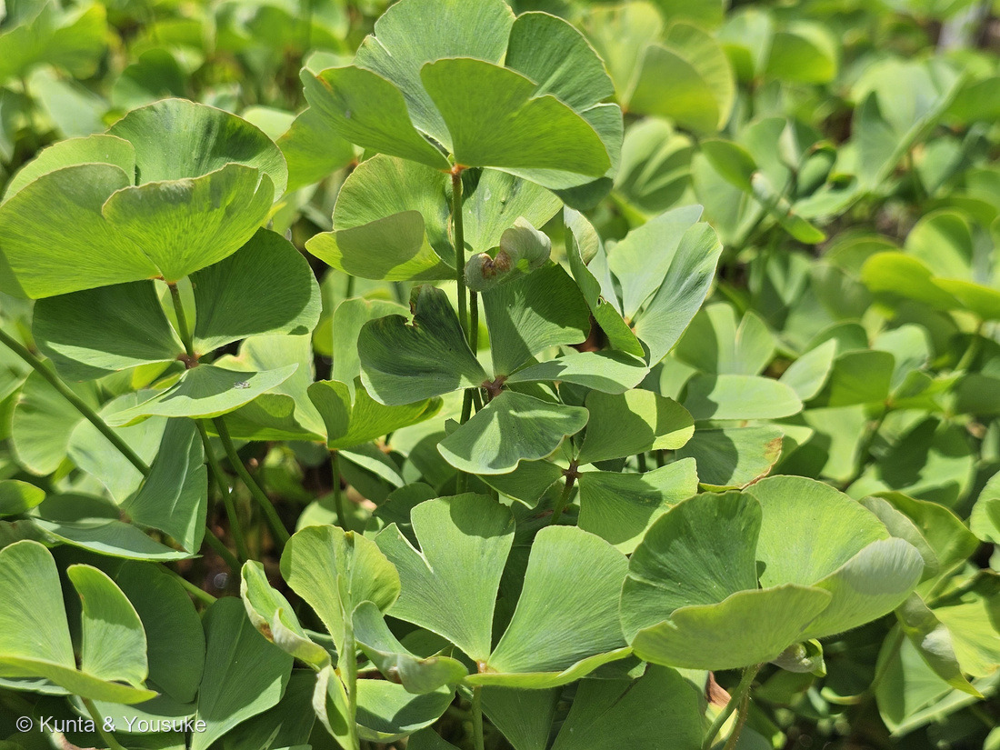
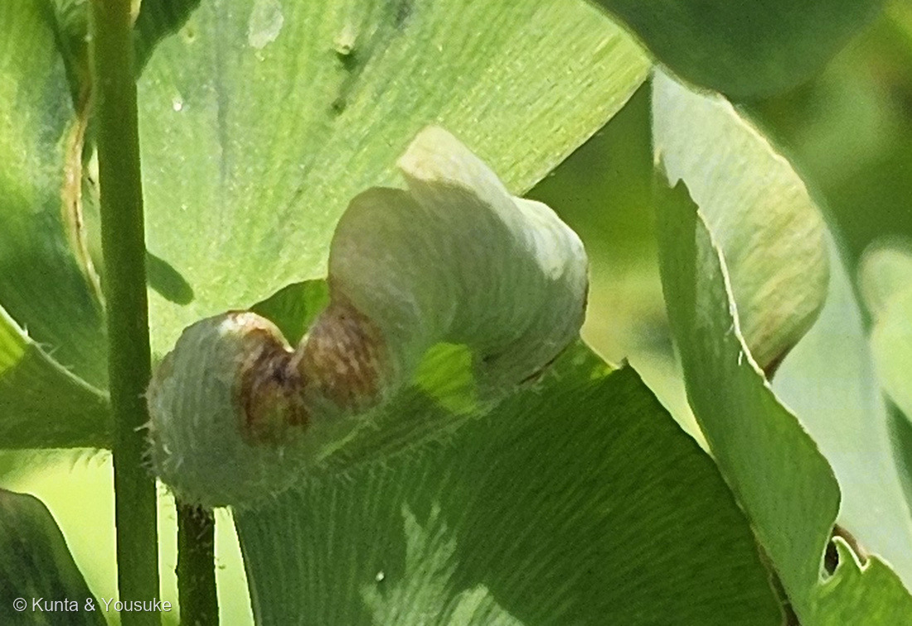
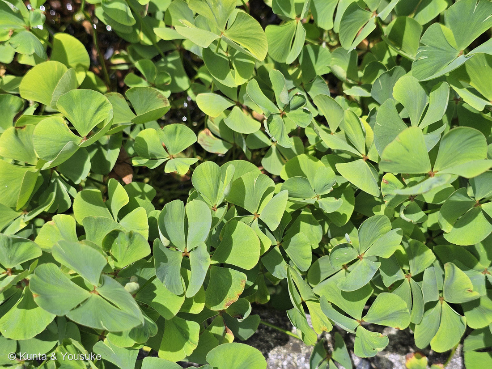
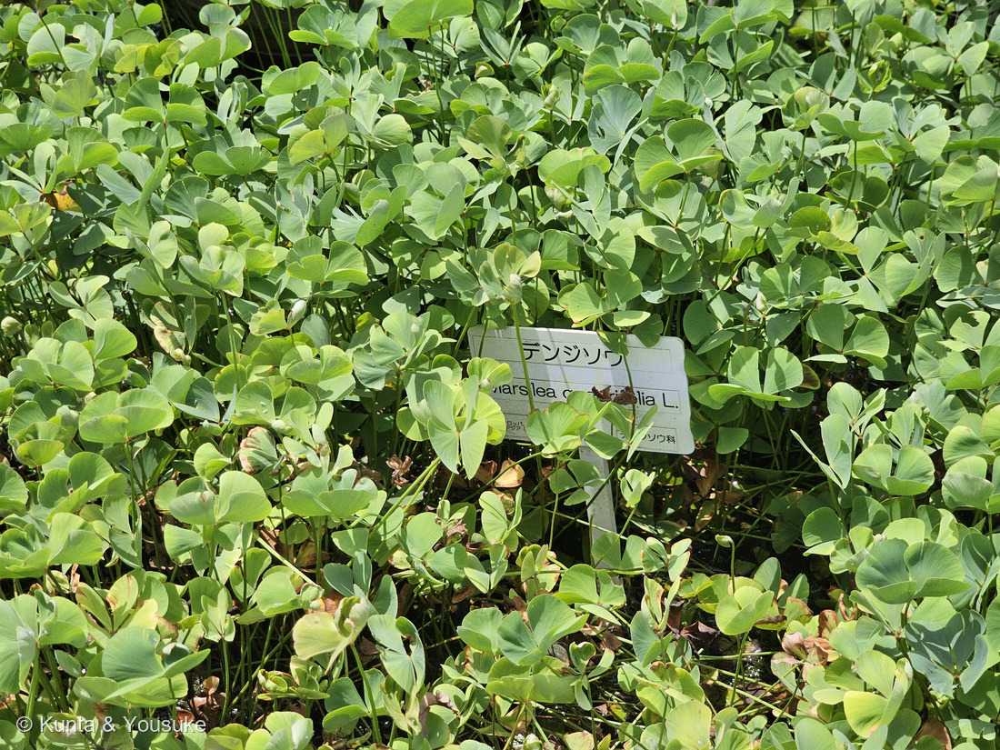

地図を読み込んでいるよ…
🔍 写真も地図も、押しているあいだ拡大して見られるよ（スマホは指を置いてすこし待ってね）。
🌍 の地図＝この子がもともと自生している場所を緑に。北海道・本州・四国・九州、朝鮮半島、中国、台湾、ヨーロッパからインド北部・東南アジアまで。水田・水路・池沼の泥地に生える在来種。
⭐日本にもともといる子（在来種）だよ。三河の植物観察は「北海道、本州、四国、九州、朝鮮、中国、ヨーロッパ」とし、日本語版Wikipediaは「ヨーロッパからインド北部、東アジアにわたって分布」とする。⭐園の名札にも「ヨーロッパ、アジア」とあった。⚠この地図の緑は「どこにでもいる」という意味ではないよ――生えるのは水田・水路・池沼の泥地だけで、日本では環境省の準絶滅危惧（NT）。⚠⚠減った理由は「水田の管理放棄による生育条件の悪化」（環境省レッドリスト）＋農薬の使用（山科植物資料館）。⭐⭐つまり、この緑は「田んぼがあった場所」とほとんど同じなんだ。
⚠ 地図は国（日本と中国だけ県・省）までしか塗れないから、ほんとうの分布より広く見えていることがあるよ。地図はだいたいの場所。正確なところは、上の文を見てね。
デンジソウ（田字草）
Marsilea quadrifolia L.
別名 英名 water clover（水のクローバー）／four-leaf clover fern／観賞用水草としての呼び名 ウォータークローバー
デンジソウ科 · Marsileaceae（デンジソウ属 Marsilea）── ⭐図鑑ではじめてのデンジソウ科＝93科目／⭐⭐図鑑で2つめのシダ植物の科（これまではトクサ科だけ）
燻太さんの一言「この子はデンジソウ。シダ植物の一種みたいだけど、水辺の四つ葉のクローバーだね」── そのとおりで、そしてクローバーからいちばん遠い子でもあるんだ
⭐⭐⭐⭐ 名前と学名の由来 ──「田」の字と、ボローニャの学者
- ⭐⭐⭐和名の「デンジソウ」は「田字草」。——長い葉柄の先に4枚の小葉がつき、それが「田」の字の形になるから（三河の植物観察「小葉は…4個つき、田の形になるためデンジソウという」）。⭐「田んぼの草」だからではなくて、「田という字に見える草」なんだ。⚠でも、ほんとうに田んぼの草でもあるから、ややこしくて楽しいね。
- ⭐⭐属名 Marsilea は、イタリアの博物学者 ルイジ・フェルディナンド・マルシリ（Luigi Ferdinando Marsili, 1656–1730）にちなむ（英語版Wikipedia「The name honours Italian naturalist Luigi Ferdinando Marsili」）。⭐ボローニャの科学院をつくった人で、リンネがその名前をこの草につけたんだ。
- ⭐種小名 quadrifolia は「四つの葉の」（quadri＝四 ＋ folium＝葉）。⭐⭐つまり学名ぜんぶで「マルシリさんの、四つ葉」。
- ⭐⭐英名は water clover（水のクローバー）／four-leaf clover fern（四つ葉のクローバーのシダ）／clover fern（英語版Wikipedia）。⚠ただし、そこには「these are not actual clovers（これらは本物のクローバーではない）」とちゃんと書いてあるよ。
この植物のこと ── 93科目、そして「シダらしくないシダ」
- ⭐⭐⭐図鑑ではじめてのデンジソウ科＝93科目だよ。⭐⭐そして、図鑑で2つめのシダ植物の科——これまでシダ植物は073・194・195・208のトクサ科だけだった。
- ⭐⭐⭐⭐そして、この二つはちょうど正反対なんだ。——トクサは「葉に見えない葉」をもつ子（葉は退化して、節のはかまになっている）。⭐デンジソウは「葉が主役なのに、シダに見えない」子。⚠どちらも、ぼくらの思う「シダらしさ」から外れているね。
- 多年生の水生シダ。根茎は細く、泥の上を長く横にはって、分枝して広がり、節から根を出す（三河の植物観察）。⭐だから写真③のように、水面をびっしりおおうひとつながりの群落になるんだ。
- 葉柄は長さ10〜18cm。小葉は長さ0.8〜1.6cm・幅0.7〜1.5cmの倒三角形〜扇形で、4個つく（同）。
- ⭐⭐水面では葉を水平にひろげ、水中では立つ（日本語版Wikipedia）。⭐水の深さによって、姿を変えるんだね。
- ⭐夏緑性＝冬は地上部が消えて、春にまた出てくる（環境省レッドリスト）。
同定について
- ⭐⭐園の名札に「デンジソウ／Marsilea quadrifolia L.／（ヨーロッパ、アジア）／デンジソウ科」とあった＝名札つきだよ（写真④）。
- ⭐形のうえでも決まる＝長い葉柄の先に、倒三角形〜扇形の小葉が4枚／泥の上を長くはう根茎／水面をおおう群落／⭐⭐そしてうずまき状に巻いた若葉（写真②）。
- ⚠デンジソウ属は、日本にはこの1種だけ。⭐園の名札もあるので、種まで決めてよいと思う。
- ⚠⚠「四つ葉のクローバー」と呼ぶのは、見た目の話としてはよくても、同定としてはまったくちがう——⭐下の節に書くとおり、被子植物とシダ植物のちがいだよ。
⭐⭐⭐⭐ シダである証拠は、うずまきに巻いた若葉
⭐⭐ 写真②を見てほしいな。——四枚の小葉が、まだ内側に巻きこまれて、こぶしのように丸まっている。外側には褐色の毛。
- ⭐⭐⭐これが「巻き芽（circinate vernation）」＝シダ植物の若い葉が、ぜんまいのように巻いてから、ほどけて開くという、あのしくみ。⭐ゼンマイやワラビの、あの「くるん」とまったく同じだよ。
- ⭐⭐⭐⭐ぼくは、これがこのページでいちばん大事な写真だと思う。——四つ葉のクローバーそっくりの葉が、ゼンマイの巻き方でほどけてくる。⭐この一枚に「見た目はクローバー、正体はシダ」が両方うつっているんだ。
- ⭐①の写真の中にも、あちこちに同じ巻き芽があるよ。⭐探してみると楽しい。
⭐⭐⭐⭐ 四つ葉のクローバーとの「他人の空似」
⭐⭐ 燻太さんの言葉＝「水辺の四つ葉のクローバーだね」。——⭐見た目はまったくそのとおり。でも、中身は思いきり遠いんだ。
- ⭐⭐⭐クローバー（007 シロツメクサ）はマメ科の種子植物。花が咲いて、実がなって、タネができる。⭐⭐デンジソウはシダ植物。花も実もタネも無くて、胞子でふえる。
- ⭐⭐⭐⭐どれくらい遠いか＝被子植物とシダ植物。⭐この図鑑の「遠さのものさし」でいうと、222 ムシトリスミレで使った「バラ類 vs キク類」よりも、219 ハツミドリの「単子葉 vs 双子葉」よりも、ずっと遠い。⭐⭐種子をつくる仲間と、つくらない仲間の分かれ目だから、いちばん外側の段だよ。
- ⭐⭐⭐では、なぜ似ているのか。——⭐どちらも「長い柄の先に、小さな葉を放射状に何枚か」という、日なたの低い場所でよくある形にたどりついたから（⚠これはぼくの読みで、「クローバー形が水辺で有利だ」と書いた出典には当たれていないよ）。⚠ちがうのは枚数で、シロツメクサはふつう3枚、デンジソウはいつも4枚。
- ⭐⭐⭐⭐見分けの決め手は葉脈。——日本語版Wikipediaは「外形が四つ葉のクローバーに似るが、葉脈は二又分枝で異なる」と書いている。⭐シダの葉脈は、Y字にふたまたへ分かれてゆく。クローバーは網目になる。⚠遠目にはそっくりでも、葉を透かして見れば、すぐ分かるんだ。
- ⭐そして名前も「他人の空似」つながり＝おまけのサンショウモも、葉のならびがサンショウに似ているだけの水生シダだよ。
⭐⭐⭐ 夜になると、葉を閉じる
- ⭐⭐デンジソウは「クローバー形をした葉を持ち、すべてが4枚葉になり、就眠運動といい朝晩葉を開閉させる運動をする」（杜若園芸）。⭐昼は開いて、夜は閉じる。
- ⭐⭐⭐図鑑には、同じことをする子がもういる＝009 オジギソウ（別名ネムリグサ）と、080 カタバミのなかま（「昼間は開き夜閉じる」）。⭐⭐この二人はどちらも種子植物。⭐⭐⭐デンジソウはシダ植物なのに、同じことをしているんだ。
- ⏳⭐だから、宿題をひとつ増やしたよ＝夜の水辺に会いに行って、閉じているところを見ること。⚠園は夜には開いていないから、これはいつか、別の場所でね。
⭐⭐⭐⭐ 水田の管理放棄と、三人目の「手入れをやめたから減った子」
⚠⚠ デンジソウは、かつて田んぼのふつうの雑草だった。——いまは、環境省のレッドリストにのっている。
- ⚠環境省のレッドリストで準絶滅危惧（NT）（第5次レッドリスト・2025年3月公表）。⭐その前の第4次（2020年）は絶滅危惧Ⅱ類（VU）だったので、ランクは一段下がった。
- ⚠⚠減少要因として書かれているのは「水田の管理放棄による生育条件の悪化」。⭐脅威要因は「管理放棄」「土地開発」「池沼開発」（環境省レッドリスト）。⭐山科植物資料館は「最近では農薬の使用で、めっきり数が減りました」とも書いているよ。
- ⭐⭐⭐⭐そして、ここが図鑑の中でつながる。——「手入れをやめたから減った」子は、これで三人目だよ。
- ⭐⭐⭐三人とも「人がいなくなったから消えた」んだ。⚠「自然を守る＝人が手を出さない」ではない、ということを、この三人が並んで教えてくれる。
- ⭐そして228 キキョウとはランクの動き方まで同じ＝第4次の絶滅危惧Ⅱ類（VU）から、第5次で準絶滅危惧（NT）へ。⭐ほんの少しだけ、よくなっているほうの動きだよ。
⭐⭐ 会えた場所 ── オニバスのとなりの水鉢
⭐ この写真は、広島市植物公園の水生植物のコーナー。——水鉢や小さな池がならんでいて、名札が一つずつ立っている一角だよ。
- 12時42分54秒 … オニバスの水鉢（215 オオオニバスとは別の子だね）
- 12時43分02秒〜12秒 … ⭐この子（デンジソウ）
- 12時43分51秒〜44分02秒 … 212 巨大カボチャ（畑）
- ⭐つまり、オニバスを見た8秒あとに、この四つ葉に出会っている。⭐⭐いちばん大きい葉と、小さい葉。水生植物の両はしが、となりあわせに置いてあったんだね。
- ⏳この一角には、まだ登録していない子がたくさんいた（タコノアシ、オグラコウホネ、ジュンサイらしい浮葉、ガマ…）。⭐次の候補だよ。
参考：三河の植物観察・デンジソウ（Marsilea quadrifolia L.／小葉は長さ0.8〜1.6㎝、幅0.7〜1.5㎝の倒三角形〜ファン形、4個つき、田の形になるためデンジソウという／根茎は細く、泥上を長く横に伸び、分枝して広がる。節から根を出す／葉柄は長さ10〜18㎝／胞子嚢果は褐色〜黒色、長さ3.5〜4㎜、幅2.9〜3.2㎜、厚さ約2㎜の楕円形、早落性の毛が密生／水田、水路／北海道、本州、四国、九州、朝鮮、中国、ヨーロッパ）／Wikipedia・デンジソウ（名前の由来は「田字草」で、四枚の葉が放射状に広がる形を漢字の田の字に見立てたもの／葉には長い葉柄があり、先端に四枚の小葉をつける。水面では水平に広げ、水中では立つ／楕円形で膜に包まれた胞子のう群のなかには多数の胞子のうが入っており／大胞子と小胞子の区別がある／外形が四つ葉のクローバーに似るが、葉脈は二又分枝で異なる／観賞用水草としては「ウォータークローバー」）／Wikipedia (English)・Marsilea（The name honours Italian naturalist Luigi Ferdinando Marsili (1656–1730)／water clover, four-leaf clover, clover fern／long-stalked leaves which have four clover-like lobes and are present either above water or submerged／these are not actual clovers (genus Trifolium)／Marsilea is heterosporous／The sporocarps of some Australian species are very drought-resistant, surviving up to 100 years in dry conditions）／環境省 レッドリスト・レッドデータブック（デンジソウ）（準絶滅危惧（NT）／第5次レッドリスト・2025年3月公表／前回（第4次）は絶滅危惧Ⅱ類（VU）／水田や池沼などの泥地に生育／夏緑／水田の管理放棄による生育条件の悪化／脅威要因＝管理放棄・土地開発・池沼開発／北海道、本州、四国、九州）／山科植物資料館・デンジソウ（葉が漢字の田の字に見えることから、デンジソウ（田字草）とよばれる／日本では本州から九州にかけて、広く分布しますが、最近では農薬の使用で、めっきり数が減りました／春になり、日差しも強くなるころ、田んぼなどの水辺に四葉のクローバーを思わせる植物が現れます）／杜若園芸・デンジソウ（クローバー形をした葉を持ち、すべてが4枚葉になり、就眠運動といい朝晩葉を開閉させる運動をする／浅水中や湿地で育つ抽水植物／水深が深くなると浮葉になりやすい）